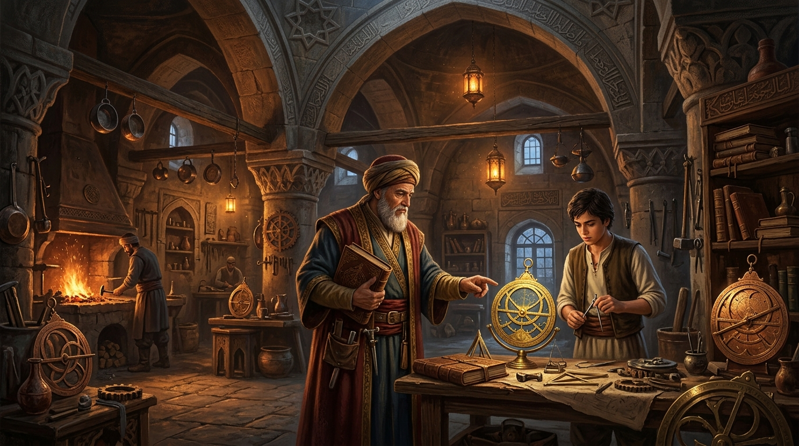
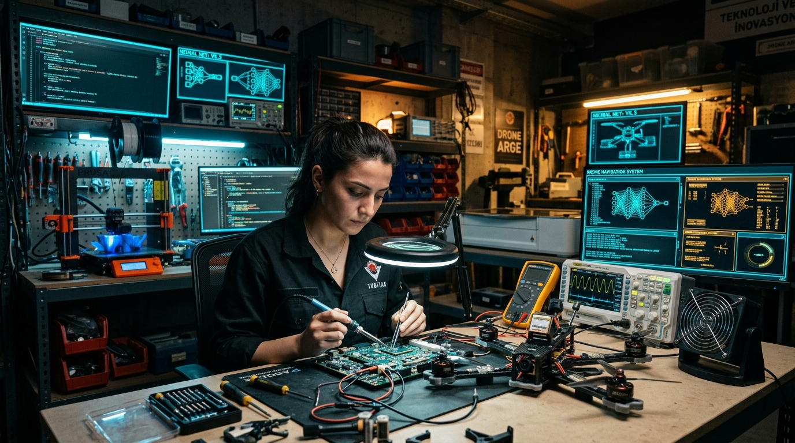

İDRAKİN DELİ GÖMLEĞİ
Üniversite, Tecessüsün Katli ve Teslimiyet Senedi

"İzm'ler idrakimize giydirilen deli gömlekleri. İtibari, samimi olmayan tabular. Kollarımızı bağlayan, bizi birbirimize düşman eden mefhumlar. Düşünceye vurulan zincirler."
"Mektep, insanı kendi fıtratına yabancılaştıran, ruhu öldürüp yerine diplomayı ikame eden bir bezirgânlık haline gelmiştir. Hakiki mektep unvan dağıtan değil, hakikate sevdalı şahsiyetler yoğuran ocaktır."
"Batı'nın papağanı olmak ilim adamlığı değildir. Kendi diliyle, kendi köküyle, kendi hür aklıyla düşünmeyen adam sömürge aydınıdır. Türkiye'nin kurtuluşu, amfilerin ezberci zincirlerini kırıp milli dehamızı sahada ayağa kaldırmaktan geçer."
# Mesele: Mabedin Çöküşü ve Kurumsallaşan Zihinsel Esaret
İnsan idrakinin en saf, en ele avuca sığmaz itici gücü tecessüstür; yani hakikati arama iştiyakı, doymak bilmez bir anlama, sökme ve sıfırdan inşa etme arzusu. Bu arzu doğası gereği serazattır; sınır tanımaz, hiçbir kalıba sığmaz, ne bir binanın harcına hapsedilebilir ne de vizelerin ve finallerin dar takvimine.
"Üniversite, hakikatin koşulsuz arandığı bir cemaat olmaktan çıkıp devletin memur ihtiyacını karşılayan bir meslek okuluna veya bürokratik bir aygıta dönüştüğünde kendi ruhunu katleder. Hakikat arayışı kurumsal mekanizmaların emrine verilemez."
Cemil Meriç, zihni donduran ithal fikir şablonlarına "idrake giydirilen deli gömlekleri" teşhisini koyarken meseleyi salt ideolojik bir körleşme olarak ele alıyordu. Oysa bugün o gömlek, soyut mefhumların sınırlarını aşmış; amfileri, sararmış ders notları, kürsü derebeylikleri ve bürokratik ceza zırhlarıyla bizatihi modern üniversitenin fiziksel ve kurumsal mimarisine dönüşmüştür.
I. Teslimiyet Senedi Olarak Diploma: İtaatin Belgesi
Dört veya beş yıl boyunca bir amfide tescillenen şey zihinsel derinlik değildir:
- Saçma ve çağdışı bir bürokrasiye ses çıkarmadan tahammül edebilme kapasitesi,
- Hocanın bariz cehaletini ve hatalarını yüzüne vurmayacak kadar kendini sansürleme becerisi,
- Anlamsız bir ezberi sınav kâğıdına kusup kapıdan çıktığı an unutmayı kabulleniş,
- Kendi özgün metodolojisini çöpe atıp "kürsünün istediği şablonu" taklit etme ikiyüzlülüğü.
"Diploma, modern insanın efendisine gösterdiği kölelik beratıdır. İnsanlar bir kâğıt parçası uğruna haysiyetlerini, meraklarını ve şahsiyetlerini amfilerin kapısında bırakırlar."
II. Kürsü Derebeyliği ve Hakikatin Maaşa İpoteklenmesi
Akademi, bilgi üretiminin kalesi olduğu iddiasıyla meşruiyet devşirir; oysa gerçekte unvan tüccarlarının ve konfor alanı bekçilerinin patrimonyal mülküdür. Arthur Schopenhauer, 19. yüzyılda bu sahte kutsallığın maskesini indirmiştir:
"Hakikati aramakla değil, devletten alacağı maaşla ve kürsüdeki koltuğuyla ilgilenen unvan sahipleri felsefeyi ve bilimi boğar. Üniversite felsefesi, hakikatin değil; geçim derdinin ve statükonun hizmetindedir."
Prof. Dr. Celal Şengör'ün tespiti durumu özetler: "Bizde üniversite hocası kendini yarı-tanrı zanneder. Odasına girerken titrersin, soru sorarsan düşman beller. Bu kafa feodal kabile reisliği kafasıdır."
III. 1982 YÖK Düzeni: Kurbanları Gardiyan Yapma Paradoksu
Neden 12 Eylül 1980 darbesinin ürünü olan 2547 sayılı YÖK nizamı 40 yıldır tasfiye edilemez? Çünkü sistemi değiştirebilecek makamlara gelenlerin tamamı, bizzat o sistemin tornasından geçmiş, onun diplomasını almış ve 30 yıl boyunca o ezaya boyun eğmiş kurbanlardır.
"Bir adama, maaşı ve statüsü bir şeyi anlamamasına bağlıyken o şeyi anlatmak imkânsızdır."
IV. Maarifin İflası: Sararmış Notlar, Taş Mektep ve Not Terörü

"Disiplinci iktidar, bireyleri uysal bedenler haline getirmek için çalışır. Sınav ritüeli bu uysallaştırmanın doruk noktasıdır; amaç bilginin derinliği değil, iktidarın normuna ne kadar kusursuz uyulduğunun denetlenmesidir."
V. Dil ve Jargon Tahakkümü: Anlaşılmazlığın Arkasına Saklanan Cehalet
George Orwell'in teşhisiyle: "Akademik jargon, saçmalığı saygın göstermek ve yalana hakikat kılığı sokmak için icat edilmiştir." Açık düşünen insan açık yazar. Bulanık yazanlar ise kafalarında ne olduğunu kendileri de bilmeyenlerdir.
VI. Feynman'ın Aynası: Ezberleyen Fakat Anlamayan Kargo Kültü
"Öğrencilerin sınav sorularına kitaptaki cümlelerle kusursuz yanıtlar verdiğini gördüm. Ama onlara doğadan somut tek bir örnek sorduğumda tam bir sessizlik oluyordu! Hiçbir şey anlamamışlardı. Bu bilim değil, kargo kültüdür."
VIII. Tarihten Günümüze Krizler: 1580 Rasathane Yıkımı ve 1933 Reformu
1580'de Takiyüddin'in İstanbul Rasathanesi'nin "gökleri gözetlemek uğursuzluktur" fetvasıyla topa tutulması, bu toprakların idrakine vurulan tarihi bir deli gömleğidir. 1933'te Albert Malche raporuyla lağvedilen Darülfünun da sararmış notların papağan gibi ezberletildiği bir çoraklıktı.
⏳ İdrakin Tarihsel Kırılma Noktaları (Zaman Çizelgesi)
El-Cezeri: Sibernetiğin ve Tezgâhın Doğuşu
Artuklu sarayında pratik otomatlar ve krank millerini elleriyle inşa etti; amfisiz üretimin zirvesi.
Ali Kuşçu & Sahn-ı Seman Medreseleri
Fatih Sultan Mehmed ile hendese ve astronomi medreselerin merkezine oturtuldu.
İstanbul Rasathanesi'nin Topa Tutulması
Takiyüddin'in rasathanesi gerici fetvalarla yerle bir edildi; Doğu'nun bilimsel kırılma noktası.
Kâtip Çelebi'nin Mîzânü'l-Hakk Feryadı
Medreselerden matematiğin ve mantığın kaldırılmasının felaket getireceği tarihi kayıtlara geçti.
Albert Malche Raporu ve Darülfünun Tasfiyesi
Sararmış notları ezberleten hocalar tasfiye edildi; İstanbul Üniversitesi kuruldu.
2547 Sayılı YÖK Kanunu & Kışla Nizamı
Üniversiteler bürokratik merkezi vesayete bağlandı; gardiyanlık kısırdöngüsü başladı.
Ioannidis Raporu & Aaron Swartz Manifestosu
Akademinin tekrarlanabilirlik iflası kanıtlandı; açık erişim devrimi ateşlendi.
Yapay Zekâ, Açık Donanım ve Otonom Polimat Çağı
Amfilerin tekelini kıran bağımsız zihinler, kendi garajında ve ekranında milli teknoloji üretiyor.
IX. Milli Bilim Mirası: Cezeri'den Cahit Arf ve Aziz Sancar'a

Araştırmayı & Maaşı Fonlar"] --> Y2["2. Araştırmacı:
Makaleyi Bedava Yazar"] Y2 --> Y3["3. Hakemler:
Bedava Denetler"] Y3 --> Y4["4. Kartel Yayıncı (Elsevier):
%40 Kârla Telifi Alır"] Y4 --> Y5["5. Üniversite Kütüphanesi:
Milyonlarca $'a Geri Alır"] style Y1 fill:#1e1b2e,stroke:#8b5cf6,color:#c4b5fd style Y4 fill:#450a0a,stroke:#ef4444,color:#fca5a5 style Y5 fill:#14532d,stroke:#22c55e,color:#bbf7d0
X. Yayın Kartelleri ve Aaron Swartz'ın Başkaldırısı
Elsevier, Springer ve Wiley gibi karteller kamu parasıyla üretilen bilgiyi PDF başına 50 dolarlık ödeme duvarlarına kilitler. 26 yaşındaki dahi aktivist Aaron Swartz'ın Guerilla Open Access Manifestosundaki sözü bugün rehberimizdir: "Bilgiye erişim bir ayrıcalık değil, evrensel bir insan hakkıdır."
XI. Tekrarlanabilirlik Krizi ve Ioannidis Raporu
• Araştırmacıların %70'inden fazlası başka bir bilim insanının deneyini tekrarlayamamış ve başarısız olmuştur.
• Bilim insanlarının %52'si kendi deneyini dahi tekrarlayamamıştır.
• John Ioannidis'in meşhur tespiti: "Yayınlanan çoğu bilimsel araştırma bulgusu yanlıştır."
XII. Kürsünün Reddettiği Nobeller
XV. Mobbing ve Depresyon: Nature 2019 Küresel Verileri
6.300 doktora öğrencisinin katıldığı Nature raporuna göre araştırmacıların %36'sı depresyon ve anksiyete tedavisi aramakta, %21'i doğrudan mobbinge maruz kalmaktadır. Mobbing yapanların %48'i ise bizzat kendi tez danışmanıdır.
XVII. "Derisi Masada Olmayanlar" (Skin in the Game)
"Bir teoriyi ortaya atan ama o teorinin çöküşünden zerre kadar bedel ödemeyen akademisyenin fikirleri fildişi kulenin gevezeliğidir. Gerçek hakikat; sanayide motor tasarlayan, çalışan kod yazan ve hatasının bedelini bizzat ödeyen sahici üreticinindir."
XX. Ahilik ve Milli Lonca Tezgâhı: Hakiki Maarif Ocağı

Bu toprakların hakiki maarif modeli amfiler değil, Ahi Evran'ın kurduğu Ahilik Tezgâhıdır. Ahilikte bilgi kağıt parçasıyla değil; ustanın yanında talaş yutarak, demir döverek, tezgâhta pişerek aktarılırdı. Kusurlu mal üretenin "pabucu dama atılır", meslekten men edilirdi.
Tezgâhta Pratik İnşa"] --> A2["Kalfalık:
Ahlak & Derisi Masada Üretim"] A2 --> A3["Ustalık & Şed Kuşanma:
Milli Eser & Bağımsız Atölye"] end subgraph AmfiFabrikasi ["🏰 BÜROKRATİK AMFİ FABRİKASI"] B1["4 Yıl Slayt Ezberi"] --> B2["Vize-Final Not Terörü"] B2 --> B3["İşsiz, Üretemeyen Diplomalı"] end style AhilikOcagi fill:#064e3b,stroke:#10b981,color:#d1fae5 style AmfiFabrikasi fill:#450a0a,stroke:#ef4444,color:#fecaca
XXI. İstikbal Göklerdedir: Amfilerden Sonsuz Kızıl Elma Ufkuna

Gazi Mustafa Kemal Atatürk'ün "İstikbal göklerdedir" şiarı; Türk gençliğinin amfi vesayetini yırtıp semalara, uzaya ve bağımsız yüksek teknolojiye yürümesini emreder. Amfiler yerinde sayanların, gökler ise hür idraklerindir.
XXIII. Milli Teknoloji Hamlesi & Dijital Agora

21. yüzyıl Türk mühendisi amfilerin sararmış notlarına mahkûm değildir. KAAN, Kızılelma, Bayraktar TB3, TÜRKSAT ve Türkçe LLM modelleri yerli hangarlarda ve amfisiz tezgâhlarda tasarlanmaktadır.
XXV. Açık Donanım ve Garaj Laboratuvarları

Arduino, Raspberry Pi, ESP32, açık mimarili RISC-V çipleri, 3D yazıcılar ve masaüstü CNC tezgahları sayesinde genç bir zihin, 50 yıl önce koca bir enstitünün yapamadığı mekanik ve elektronik prototiplemeyi kendi garajında tamamlayabilmektedir.
XXVI. Yapay Zekâ Destekli Otonom Polimat Mimarisi
Gelişmiş büyük dil modelleri ve yerel açık ağırlıklar (Ollama, DeepSeek, Llama); üniversite kürsülerinin asırlık bilgi tekelini tarihe gömmüştür:
XXVII. Günlük 7 Otonom İnşa Disiplini
XXX. İnteraktif Jargon Dekoderi (20+ Terim)
| Resmi Terim | Acı Hakikat |
|---|
XXXI. Çözüm Manifestosu: 4 Kademeli Milli Maarif Mimarisi
1. Bireysel Devrim: Proof of Work
Diplomanın yerine doğrulanabilir GitHub reposu, çalışan donanım prototipi ve arXiv önbaskıları. Kendi müfredatını inşa eden otonom araştırmacı ahlakı.
2. Sektörel Devrim: Diplomadan Bağımsız İşe Alım
Milli savunma ve teknoloji devlerinde (Baykar, ASELSAN, TUSAŞ) diploma zorunluluğunun kalkması; canlı kodlama, CTF ve pratik yetenekle doğrudan istihdam.
3. Yapısal Reform: 1982 Düzeninin Tasfiyesi
YÖK'ün merkezi vesayetinin dağıtılması, ömür boyu yatan kadro düzeninin bitirilmesi ve kamu fonlu tüm araştırmaların halka açılması (Açık Bilim Yasası).
4. Mekânsal Altyapı: 81 İlde Milli Garajlar
Gençlerin ücretsiz girebileceği 7/24 açık FabLab, CNC, 3D yazıcı ve GPU laboratuvarları; 4 yıl slayt izlemek yerine 1. günden usta-çırak entegrasyonu.
XXXII. 10 Açık Bilim ve Donanım Şartnamesi
XXXIII. Kavramsal Karşılaştırma Matrisi
| Kriter | 🏰 Bürokrasi Akademisi | ⚡ Otonom Teknoloji Üretimi |
|---|---|---|
| Bilgi Kaynağı | Sararmış ders notları, kürsünün şahsi slaytları | Global açık arşivler, arXiv, LLM, milli tezgâh |
| Doğrulama Ölçütü | Vizede hocanın görüşünü papağan gibi tekrarlamak | Göklerde uçan sistem, çalışan kod, açık prototip |
| Mülkiyet & Hak | Asistan emeğinin zoraki yazarlıkla gasbı | Açık lisanslar (MIT/CC) & bağımsız milli mülkiyet |
| Risk (Skin in Game) | Yok; teorik lafazanlık, sıfır bedel | Derisi masada; gerçek dünya testi ve sorumluluğu |
Özgürleşme Endeksi ve Otonom Üretici Testi
İdrakine giydirilmek istenen prangalardan ne kadar arındın? Mevcut üretim ve tecessüs durumunu test et, skorunu ve sana özel yol haritanı öğren.
Tebrikler! Amfilerin sahte kutsallığını aşmış, kendi tezgâhında üreten serazat bir zihinsin.
XXXIV. Felsefi, Sosyolojik ve Bilimsel Literatür
"Kelimeleri rütbelerine göre kabul eden bir cemiyette, hakikat nasıl nefes alsın?"